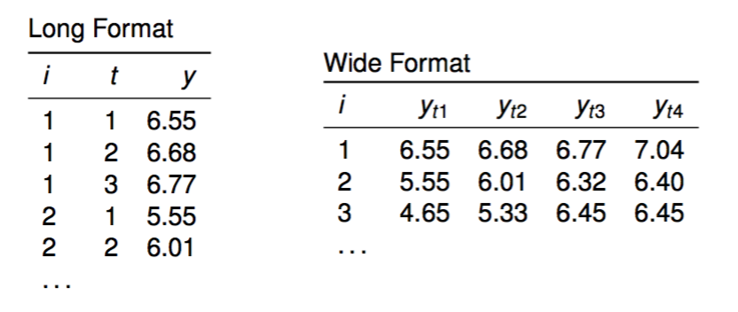

Abschnitt 2 Einführung
2.1 Längsschnittdaten
Begriffe
- Wiederholte Querschnittserhebungen (time series cross sectional, TSCS): \(n\) unabhängige Fälle (repräsentativ für dieselbe Grundgesamtheit) zu mehreren Messzeitpunkten \(t\).
- Zeitreihe: Eine Einheit mit vielen Messzeitpunkten (\(n = 1\), \(t > 30\)).
- Paneldaten: Dieselben Einheiten mit wiederholten Messungen (\(n > 30\), \(t \ge 2\))
- Macro panel: \(n\) klein, \(t\) groß (z.B. jährliche Untersuchung von Staaten, 1950–2015)
- Micro panel \(n\) groß, \(t\) klein (typisches Befragungspanel)
- In diesem Workshop geht es um micro panels mit \(t > 2\)
Vorteile von Paneldaten
- Paneldaten erlauben die Identifikation von kausalen Effekten unter schwächeren Annahmen (im Vergleich zu Querschnittsdaten).
- Wir haben einige (aber nicht perfekte!) Informationen über die zeitliche Abfolge von Veränderungen.
- Wir können untersuchen, ob, und wenn ja, wie ein Ereignis (eine Veränderung eines Prädiktors) das Kriterium verändert.
- Paneldaten erlauben die Untersuchung von individuellen Verläufen
Kausale Effekte mit Paneldaten schätzen
Bedingungen
- Kovariation zwischen \(X\) und \(Y\) (bivariate Korrelation \(r_{XY}\) )
- \(X\) muss logischer vor \(Y\) liegen
- Keine (nicht beobachteten) Störvariablen (kein \(Z\) mit kausalem Effekt auf \(X\) und \(Y\))
Herausforderungen (auch bzw. gerade mit Paneldaten)
- Entsprechung der zeitlichen Entfalltung des Effekts und des Designs (Abstände, Verläufe)
- Reliabilität und Konstruktstabilität
- Reliabilität: Bei geringer Reliabilität beobachten wir Veränderungen, die aber auf Rauschen in der Messung zurückgehen.
- Reliabilität: Wenn die Messungen über die Zeit ihre Bedeutung verändern, modellieren wir keine Veränderung des latenten Konstrukts von Interesse.
- Panelmortalität und Paneleffekte
- Panelmortalität: Einheiten (Befragte) fallen aus, möglicherweise systematisch mit Bezug auf die Konstrukte von Interesse
- Paneleffekte: Einheiten (Befragte) verändern sich durch die Messung (z.B. Lernen von Wissensfragen, Anregung durch Fragen zu Medienangeboten)
Format von Datensätzen mit Paneldaten

\(i\) indiziert Einheiten, \(t\) indiziert Messzeitpunkte, \(y\) ist eine Variable
Die Modelle in diesem Workshop nutzen das long format
- Datensätze können von einem ins andere Format transformiert werden, z.B. im
tidyverse:tidyr::gather()undtidyr::spread()odertidyr::pivot_longer()undtidyr::pivot_wider()
2.2 Beispiel-Daten
sponsored by Jule Scheper und Sophie Bruns
- KURZE INHALTLICHE BESCHREIBUNG
- Ergebungszeitraum, Messzeitpunkte
- Repeated Measures
- Constant Measures
Kurzer Auszug mit
summaryundprint
2.3 Pooled OLS (WRONG!)
Untersuchung des Effekts X -> Y
Einfachstes Modell: Regression X -> Y
##
## Call:
## lm(formula = y ~ x, data = d)
##
## Residuals:
## Min 1Q Median 3Q Max
## -2.0857 -0.4464 0.2822 0.5160 1.4126
##
## Coefficients:
## Estimate Std. Error t value Pr(>|t|)
## (Intercept) -0.400872 0.382472 -1.048 0.325
## x -0.005525 0.428517 -0.013 0.990
##
## Residual standard error: 1.182 on 8 degrees of freedom
## Multiple R-squared: 2.078e-05, Adjusted R-squared: -0.125
## F-statistic: 0.0001662 on 1 and 8 DF, p-value: 0.99Warum ist Pooled OLS immer falsch? Statistische Theorie
- Exogenitätsannahme ist verletzt, \(E(u_i|x_i) \neq 0\), da
- Korrelationen zwischen den Variablen \(x\) gehen auf nicht gemessene Eigenschaften der Einheiten zurück, z.B. Eigenschaften der Person \(z_i\), die sowohl \(x_i\) als auch \(y_i\) beeinflussen.
- Auch bekannt als omitted variable bias
- Könnte behoben werden, wenn alle \(z_i\) im Modell wären; diese Idee wird später wichtig
- Annahmen Homoskedastizität und unkorrelierte Residuen sind (wahrscheinlich) verletzt
- Systematische Variaion der Residuen zwischen Einheiten
- Wahrscheinlich serielle Korreationen durch die zeitliche Abhängigkeit der Messungen
- Annahme der Unabhängigkeit der Bebobachtungen verletzt
- Überschätzung der Information von abhängigen Fällen (dieselbe Information ist mehrmals im Datensatz)
- Zu kleine Standardfehler, zu große Zahl der Freiheitsgrade in Signifikanz-Tests
- Die wahre Fallzahl (effective sample size) ist kleiner als Zahl der Zeilen im Datensatz (long format)
- Überschätzung der Information von abhängigen Fällen (dieselbe Information ist mehrmals im Datensatz)
Warum ist pooled OLS immer falsch? Inhaltliche Überlegungen
- Unser Ziel ist es, den wahren kausalen Effekt von \(X\) auf \(Y\) zu schätzen.
- Pooled OLS vermischt aber zwei Quellen von Unterschieden in den Daten: Den (kausalen) Effekt innerhalb der Personen (within) und die Unterschiede zwischen Personen (between).
- Within und between Effekte können sich in Größe und sogar in der Richtung unterscheiden!
- Die Schätzung aus einem poold OLS Modell vermischt den kausalen Effekt und die interindividuellen Unterschiede.
- In der Sprache von Interventionsstudien ist das ein Selbstselektions-Problem: Was passiert, wenn Personen, die vor dem Treatment \(x\) schon höhere Werte in \(y\) haben? X Evtl. anpassen an Datenbeispiel X
- Außerdem fällt auf, dass im einfachen OLS Modell nichts darauf hindeutet, dass es sich um Paneldaten handelt. Selbst wenn wir die genannten Probleme nicht hätten, hätten wir auch nichts durch die Paneldaten gewonnen.